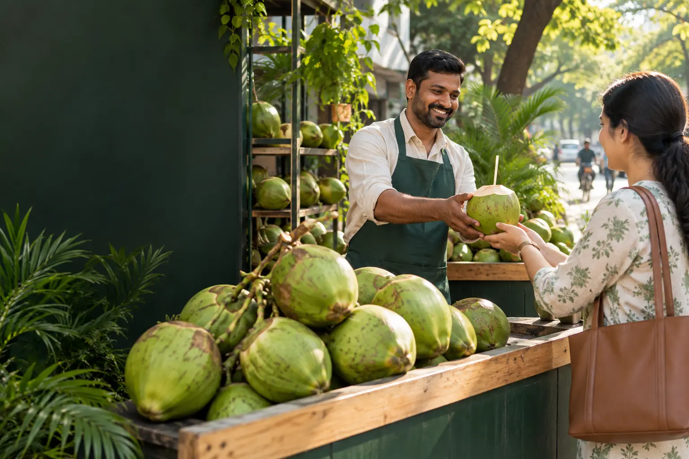

Grow Farmers.
Empower Vendors.
Serve Everyone.
Native Elaneeru is building a stronger tender-coconut ecosystem where the people who grow and the people who sell can build more dependable livelihoods.

Respect the hands that grow.
Every tender coconut begins with months of care, patience and uncertainty. Our ambition is to help create a market where good produce has dependable demand and the farmer’s effort has a stronger path to value.
From opportunity to livelihood.
We connect the people who grow with the people who serve, helping both sides become stronger.
Stronger demand
More consistent opportunity for people growing tender coconuts and supporting farming communities.
Stronger livelihoods
Roadside coconut vendors deserve dignity, reliability and growth opportunity like any other small business.
A cart can carry a family’s future.
A roadside tender-coconut cart is more than a point of sale. It is daily income, school fees, rent, savings and aspiration. Native Elaneeru is being built around one question: how do we help that small business become more dependable?

When farmers grow and vendors thrive, everyone is served better.
The outcome is bigger than a coconut: healthier local economies, more resilient livelihoods and natural refreshment reaching more people every day.
Want to grow your coconut business?
Joining Native Elaneeru should feel simple. Share your number and location; our team can verify the request and contact you separately.
Request a vendor callback
This demo does not create an active vendor account.